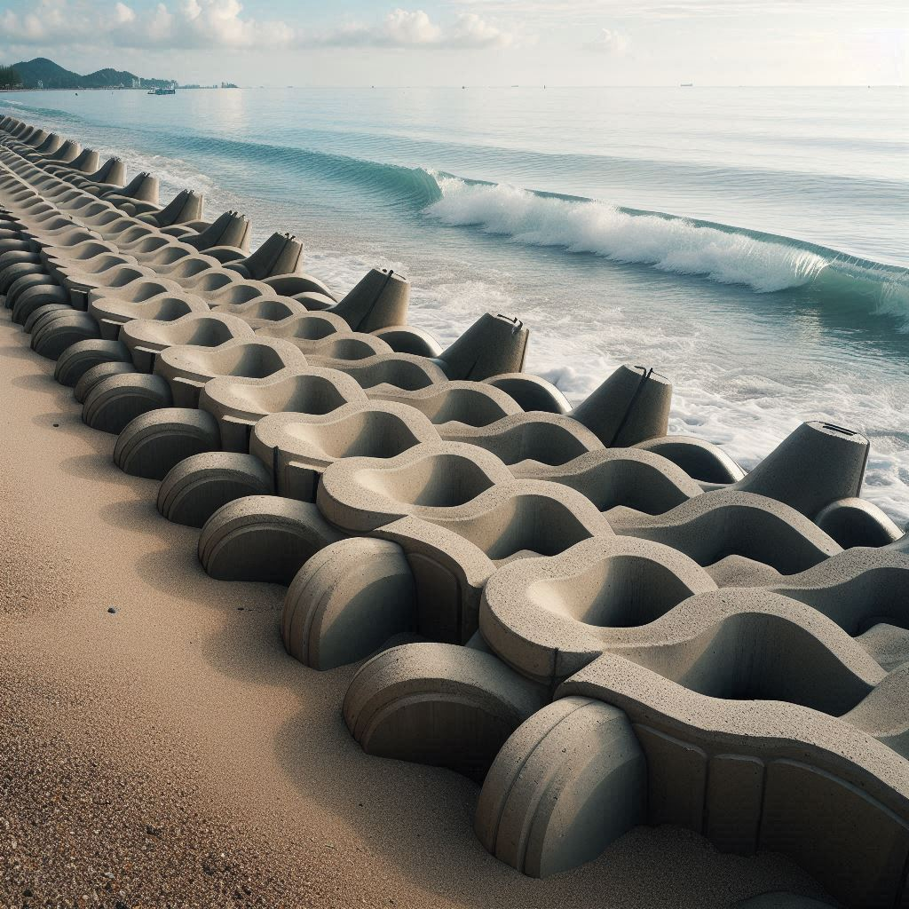
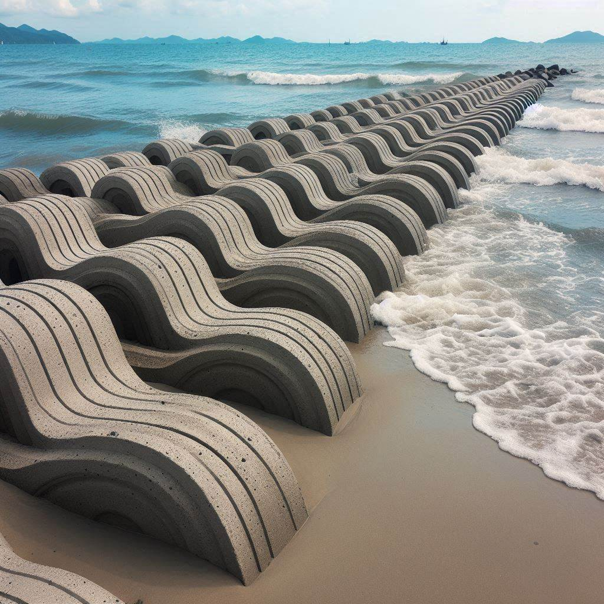

|  | |
 | |
| 港口緣起 | 消波塊 | 施作方式 | 研習心得 |
傳統消波塊：通常由石頭、混凝土或其他建築材料製成。這些消波塊被放置在水下，以吸收波浪的能量。
活性消波塊：這些消波塊被設計成結合自然環境元素，同時提供岸線保護。例如，活性消波塊可以成為人工礁石，
提供棲息和定居的機會，或者創建複雜的結構，為不同的海洋和水生物種提供庇護和棲息地。
選擇材料：消波塊的材料至關重要。例如，牡蠣不會附著在每個浸沒的表面上，因此需要選擇適合的材料。
近年來，新型的多孔混凝土和礁基質設計增加了牡蠣或珊瑚成功定居的可能性。
成本：材料成本將佔據任何活性消波塊項目的預算。成本因材料而異，可以使用先前收集的牡蠣殼、
預製的混凝土結構（通常稱為礁球）或更大的項目，例如沉沒的退役船舶或大型基礎設施。